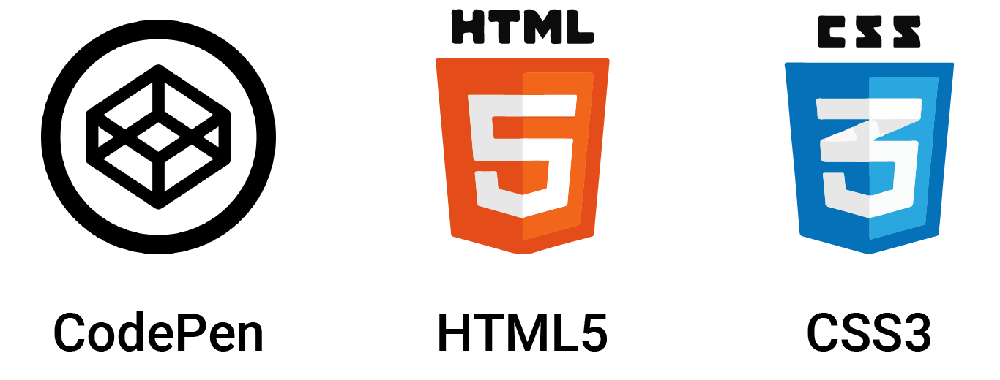

BEM
The aim of this project
To show the benefits of using BEM targeting methodology.
Objectives
To Create a card element with child inside.
To Use a modifier to edit one child element.
To nest a child element within another child element to demonstrate good name practice.
Go to the finished project here.Definition
BEM is a “highly useful, powerful, and simple naming convention that makes your front-end code easier to read and understand, easier to work with, easier to scale, more robust and explicit, and a lot more strict.” (getBem, 2018) this was developed by a company called Yandex. They created this method as a way for a team to work more efficiently together. It’s gone through many iterations since 2005 when it was first developed. And it’s been developed what we know today as simply… (Figure 1)
*Figure 1*
.block {...}
.block__element {...}
.block__element--modifier {...}
Context
Yandex decided on making independent modules based on various parts of their websites including scripts, styles and templates. They named these “blocks”. To simplify you make each element of a website with unique class names and structured like what code is shown above. This way the only thing being targeted in the stylesheet is this element. Various companies have adopted this method such as Google, BBC and BuzzFeed. And it’s only growing, this gives a lot of reason to learn it now.
My starting point
When starting this project, I had a rough idea to use BEM. However, I haven’t used it in a practical example. I've always had a problem naming my elements on a page I wanted to learn this methodology as previous websites I have coded is not named well and are confusing to edit. I was ready to make web elements using this method. Starting this project, I had a profound understanding of CSS3 and HTML5 so I wanted to see how easier It made styling a website. BEM also ties in with atomic design
The set up
Setting up to use BEM isn’t any different to making a webpage. In this instance, my personal choice of software was using code pen, CSS3 and HTML5. There weren’t any libraries to download as it’s a methodology. So, you are good to go right from your text editor!
How did i make it?
To start this project off I needed to write HTML5. I planned out beforehand what I wanted to make so this made it easier when it came to picking class names. I wrote the mark up below and gave the respective elements their tags.(Figure 2)
*Figure 2*
<div class="flower-card">
<h1 class="flower-card__heading"></h1>
<img class="flower-card__image" src="#">
<div class="flower-card__content">
<p class="flower-card__description"></p>
<div class="flower-card__btn-parent">
<button class="flower-card__btn"></button>
<button class="flower-card__btn flower-card__btn--speical"></button>
</div>
As using BEM allows me to make this in a modular way I’ve broken it down into sections. I’ve included a div as a filler within this to act as some content otherwise it would just be empty. I’ve also added some resets and imported a font at the bottom of the stylesheet.
See the Pen BEM Project Demonstrator 1 by Abu Chohan (@abuchohan) on CodePen.
Adding on to this I have given the block an element of heading. Because of BEM, I can target this heading specifically and not worry about other H1’s on the page being affected.
See the Pen BEM Project Demonstrator 2 by Abu Chohan (@abuchohan) on CodePen.
Adding another element from the code above, it’s all being targeted within this block and will not affect anything else on this page.
See the Pen BEM Project Demonstrator 3 by Abu Chohan (@abuchohan) on CodePen.
Now you are probably wondering why I have got another child within a child element of the block. This would be considered two levels deep. So how would I name it? At the start of this project, I had named this…
.flower-card__content
.flower-card__content__descriptionHowever, after reading an article about CSS architecture there is no need for these lengthy class names as it would already be specific to the block and it's messy. I altered the code so it looks simpler. This way it could be understood better.
.flower-card__content
.flower-card__descriptionSee the Pen BEM Project Demonstrator 4 by Abu Chohan (@abuchohan) on CodePen.
Lastly, I have added two buttons to the block. Again, I have added a parent to these buttons so I could control the padding around it. I have styled the button with a base class this gives it all the padding and colours etc. But on the orange button, I have used a modifier. To use one of these and give it the style from the other button I give this one two classes...(Figure 3)
*Figure 3*
.flower-card__btn
.flower-card__btn--special This way with the modifier element I can just change what I want to on this button. In this case, it’s just the colour. This could have practical uses such as sale items in an e-commerce website. Instead of making a new class you can just add a modifier to the existing one.
See the Pen BEM Project Demonstrator 5 by Abu Chohan (@abuchohan) on CodePen.
Evaluation
The demonstrator uses all the different parts of BEM that I would of like to touch on. It also successfully achieves the aims and objectives I set out to do. In terms of what I made it was just a demonstration piece that didn’t need to be overly complex. The best part about BEM is it doesn’t constrain you to certain class names it just gives you the means of a laying them out in a universal method. I personally believe that this method will be the standard in the near future.
Before using BEM, I was using SCSS to achieve an atomic design. However, nesting multiple elements within each other can get really complicated to read. Furthermore, BEM also helps the page load faster. This happens because whenever a browser renders an HTML page, it loads the styles found in CSS into a tree of selectors.
In summary, I think this project was a huge success. In terms of learning how to effectively use this method. An invaluable tool would be the countless blogs developers have written on this topic, this helped me grasp how to use it. Everything I look at on the web I critically think of what the logical class name would be and how BEM has helped me do that. I strongly favour this method and will continue to use it in all my future projects.
Word Count: 937
Refrences:
Erd, J. (2017) 5 Reasons To Use BEM (a.k.a. why is BEM G.R.E.A.T.). EL Passion Blog. [Online] [Accessed on 10 March 2018] https://blog.elpassion.com/reasons-to-use-bem-a88738317753
Kuznetsov, V., Bezuglaya, V. and Abramov, A. (2016) Best practices: Achieving modular design with BEM. Graph. [Online] [Accessed on 10 March 2018] https://www.graph.uk/enhancing-modular-design-with-bem
Writing modular CSS (Part 1) — BEM | Zell Liew. (2017) Zell Liew. [Online] [Accessed on 10 March 2018] https://zellwk.com/blog/css-architecture-1/